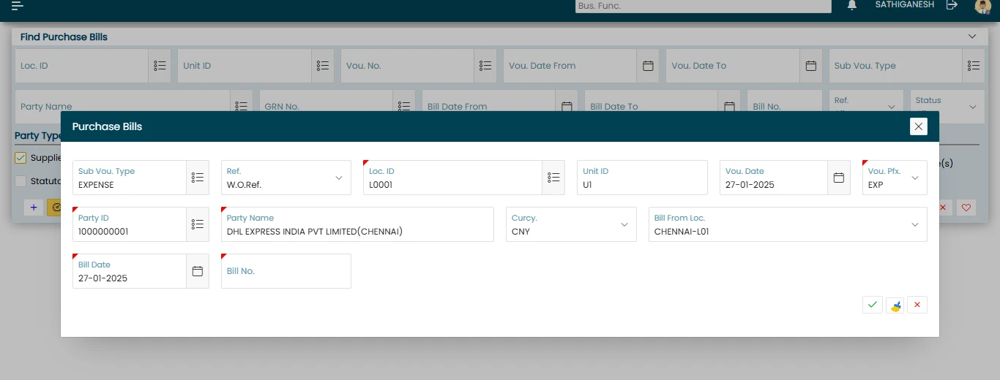
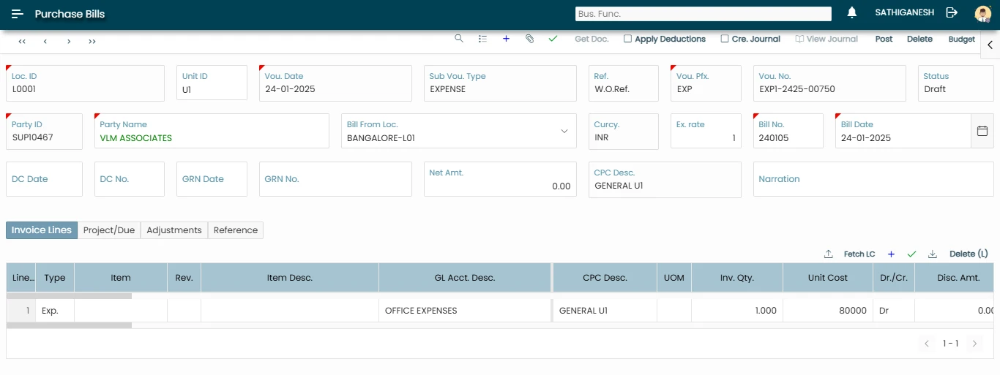

<div data-category="Financials" data-title="Expense" data-updated="December 01, 2025" data-contributors="RoadmapIT" data-breadcrumb="Home,Financials,Expense">
  <div class="page-content">
    <p>This screen is help the user record the direct expenses.</p>
    <h5>Navigation path:</h5>
    <p class="fs-6">Financials \ Transactions \ Party Document \ Purchase Bills</p>
    
    <ul style="list-style-type: none; align-content: center">
      <li class="mouse-icon">Select sub.vou type as Expense.</li>
      <li class="mouse-icon">Select (W/O) ref.</li>
      <li class="mouse-icon">Enter Loc ID.</li>
      <li class="mouse-icon">Enter Party ID.</li>
      <li class="mouse-icon">Enter Bill No.</li>
      <li class="mouse-icon">
        Click
        <i class="bi bi-check-lg fs-4 mx-2 text-success"></i>
        .
      </li>
    </ul>
    <h2>Registering Invoice for Expense</h2>
    
    <ul style="list-style-type: none; align-content: center">
      <li class="mouse-icon">Select Type as Exp.</li>
      <li class="mouse-icon">For Expense based GL account should be selected and amount should be enter in the unit cost field.</li>
      <li class="mouse-icon">If Dr is selected in the Dr/Cr tab, the amount gets added up and If Cr is selected the amount gets subtracted.</li>
      <li class="mouse-icon">According to the HSN code, the GST % will be fetched automatically.</li>
      <li class="mouse-icon">Click on create journal to view the journal/directly click post button, journal is created automatically and it will be posted.</li>
      <li class="mouse-icon">Press the post button to complete the entry and the document can be forwarded for approval.</li>
    </ul>
  </div>
</div>
